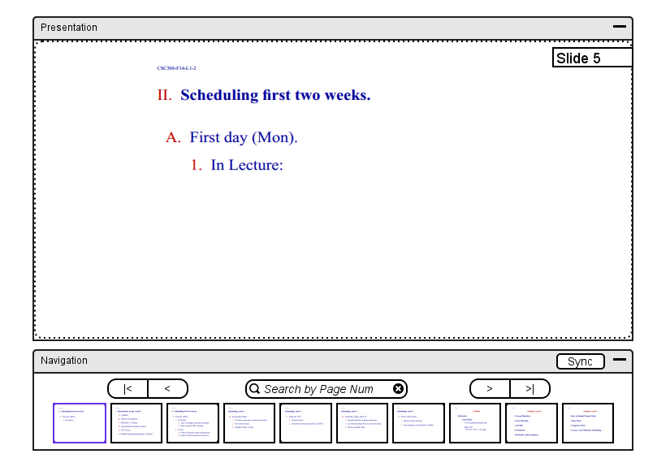

To enable the expansion or collapsing of a lecture note on a navigational
presentation slide, the instructor clicks on any area of the presentation window
within the dashed boundary. In response, the system displays the changed
presentation from Figure 35 to the window of the form shown in Figure 36.

Figure 35: Initial presentation view.
Figure 36: View after clicking within presentation task window.
When an expanded subsection is longer than its allotted text space, a scroll area appears around the specific text as shown in Figure 15.
Sketches of views for expansions collapsing of a subsection are in
Figures 36 and 37, respectively.
Figure 37: View after clicking '-' icon.